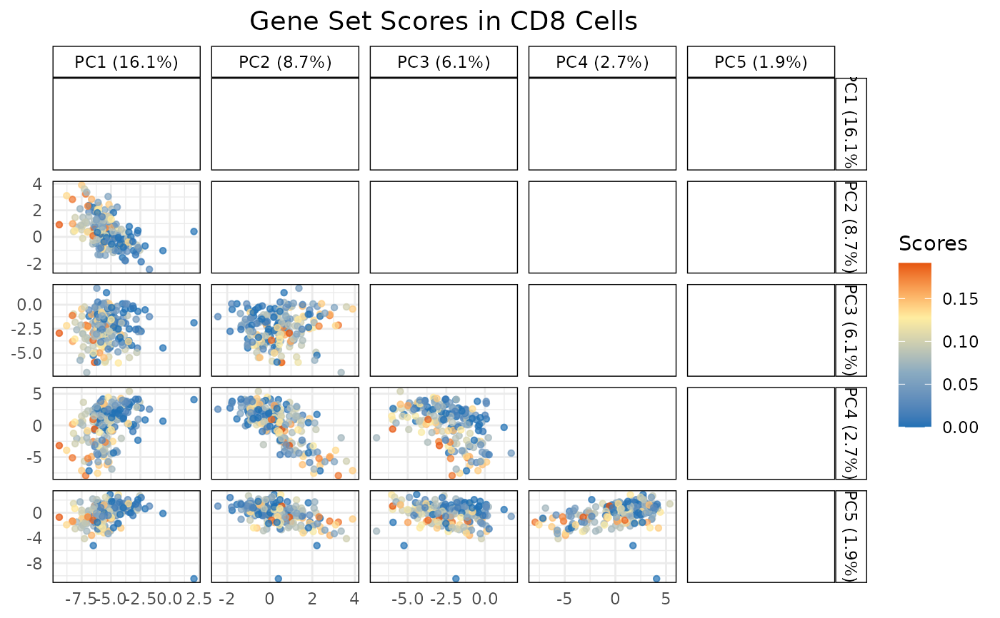

Visualization of gene sets or pathway scores on dimensional reduction plot
Source:R/plotGeneSetScores.R
plotGeneSetScores.RdPlot gene sets or pathway scores on PCA, TSNE, or UMAP. Single cells are color-coded by scores of gene sets or pathways.
Usage
plotGeneSetScores(
sce_object,
cell_type_col,
method = c("PCA", "TSNE", "UMAP"),
score_col,
pc_subset = 1:5,
cell_types = NULL,
max_cells = 2000
)Arguments
- sce_object
An object of class
SingleCellExperimentcontaining numeric expression matrix and other metadata. It can be either a reference or query dataset.- cell_type_col
The column name in the
colDataofsce_objectthat identifies the cell types.- method
A character string indicating the method for visualization ("PCA", "TSNE", or "UMAP").
- score_col
A character string representing the name of the score_col (score) in the colData(sce_object) to plot.
- pc_subset
An optional vector specifying the principal components (PCs) to include in the plot if method = "PCA". Default is 1:5.
- cell_types
A character vector specifying the cell types to include in the plot. If NULL, all cell types are included.
- max_cells
Maximum number of cells to retain. If the object has fewer cells, it is returned unchanged. Default is 2000.
Value
A ggplot2 object representing the gene set scores plotted on the specified reduced dimensions.
Details
This function plots gene set scores on reduced dimensions such as PCA, t-SNE, or UMAP.
It extracts the reduced dimensions from the provided SingleCellExperiment object.
Gene set scores are visualized as a scatter plot with colors indicating the scores.
For PCA, the function automatically includes the percentage of variance explained
in the plot's legend.
Author
Anthony Christidis, anthony-alexander_christidis@hms.harvard.edu
Examples
# Load data
data("query_data")
# Plot gene set scores on PCA
plotGeneSetScores(sce_object = query_data,
method = "PCA",
score_col = "gene_set_scores",
pc_subset = 1:5,
cell_types = "CD8",
cell_type_col = "SingleR_annotation")
